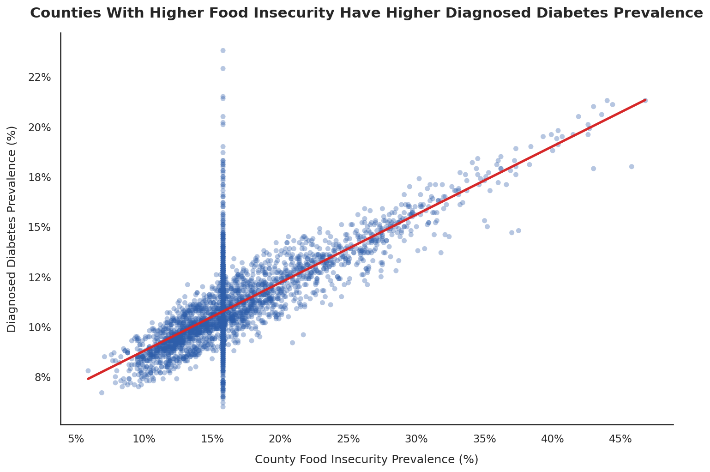

Practitioner Brief | TruBridge Healthcare Data Analytics Externship
Counties With Higher Food Insecurity Have Higher Diagnosed Diabetes Prevalence
A county-level analysis of 2,957 U.S. counties using CDC PLACES data
Summary
Across the counties studied, communities with higher food insecurity generally had higher diagnosed diabetes prevalence. The pattern was strong and consistent, but it describes communities rather than individual patients and does not prove that food insecurity causes diabetes.
Background
Food insecurity can make it harder for people to obtain a reliable supply of nutritious food, follow a diabetes-friendly diet, and manage long-term health needs. Diabetes can also place financial pressure on households through treatment costs and missed work. For a TruBridge care team member, the practical question is whether food insecurity is relevant when considering community diabetes burden. For a healthcare administrator, the question is whether the pattern could help identify counties where screening, referral partnerships, or community support deserve closer review.
The analysis used the Centers for Disease Control and Prevention’s PLACES: Local Data for Better Health, County Data, 2025 Release. The source provides county-level, model-based estimates for health outcomes and health-related social needs. The two measures selected were food insecurity during the past 12 months among adults and diagnosed diabetes among adults. Both measures were aligned to the same county identifiers, measurement period, and prevalence type.
Methods
The source file was cleaned and reshaped so that each county appeared once with one food-insecurity value and one diagnosed-diabetes value. Exact duplicates were removed, percentage values were converted to numeric form, and the final records were checked for valid ranges. One county with a missing diabetes value was removed. Food insecurity was missing for 658 counties, or 22.24% of the prepared sample, so those values were replaced with the median value of 15.80% in line with the project’s missing-data decision guide. A straight-line relationship check was then used to measure whether the two county percentages tended to move together. The most consequential limitation is that replacing more than one fifth of the food-insecurity values with the same median may have reduced variation and affected the estimated strength of the pattern.
Finding
Across 2,957 U.S. counties, higher food-insecurity prevalence was associated with higher diagnosed-diabetes prevalence. The pattern was strong, positive, and unlikely to be explained by random variation alone. The chart shows that counties with greater reported food insecurity tend to cluster at higher levels of diagnosed diabetes, although counties do not all follow the same pattern.

The relationship should not be read as evidence that food insecurity directly causes diabetes. County age distribution, income, rurality, insurance coverage, healthcare access, and other local conditions may influence both measures. The result is also ecological: it does not show that the same individuals experiencing food insecurity are the individuals diagnosed with diabetes. County-level averages can hide substantial differences between residents and neighbourhoods within the same county.
Implications
TruBridge care teams working with communities that have high diabetes burden might consider food insecurity as one factor worth examining during community needs assessment. Teams may want to review whether current workflows connect patients to nutrition assistance, food-access resources, or community partners, while avoiding assumptions about any individual patient based only on county conditions. Healthcare administrators might use the pattern to prioritise deeper local assessment, compare it with service-use data, or identify counties where coordinated diabetes and social-needs initiatives could be explored.
Data source: Centers for Disease Control and Prevention, PLACES: Local Data for Better Health, County Data, 2025 Release. Analysis prepared for the TruBridge Healthcare Data Analytics Externship.